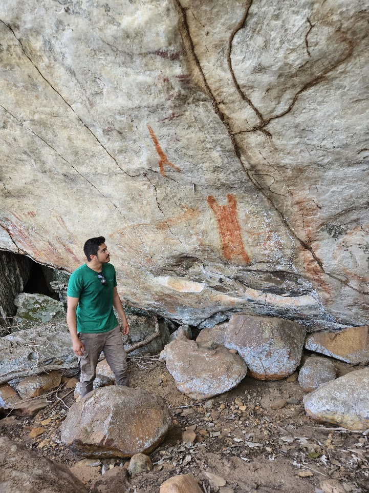

Quem Somos
Nossa Equipe de Especialistas
Profissionais altamente qualificados com experiência de campo em diversos estados brasileiros.

Ivo Moreira
Arqueólogo
Graduado pela Universidade Federal de Sergipe. Ampla experiência em projetos de arqueologia preventiva, resgate e análise laboratorial (destaque para material osteológico humano). Atuação em todos os níveis de Levantamento.
- Bioarqueologia e Arqueologia Forense
- Gestão de projetos (PAPIPA, PAIPA, PGPA)
- Análise de materiais líticos e cerâmicos

Maurício Rocha
Arqueólogo
Graduado pela Universidade Federal de Sergipe. Sólida experiência em projetos Nível II, III e IV. Atuação forte na gestão, prospecção e resgate em empreendimentos de grande porte como energia renovável, mineração e infraestrutura.
- Elaboração de FCA, PAIPA, RAIPA e PGPA
- Coordenação de equipes e geoprocessamento
- Mediação com órgãos e comunidades